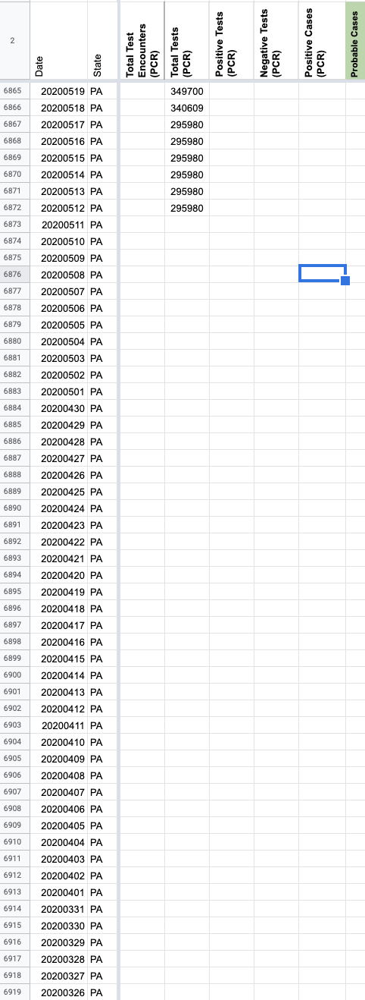
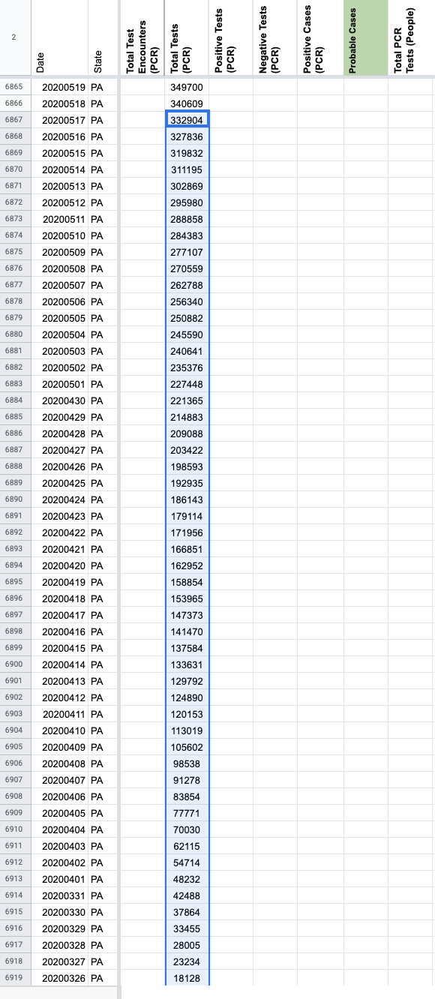
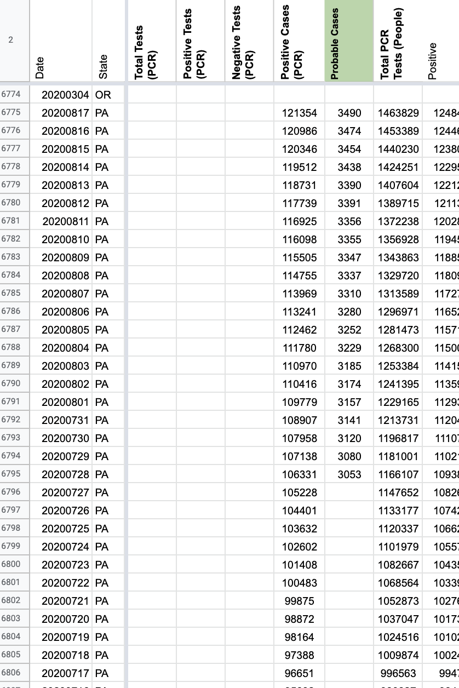
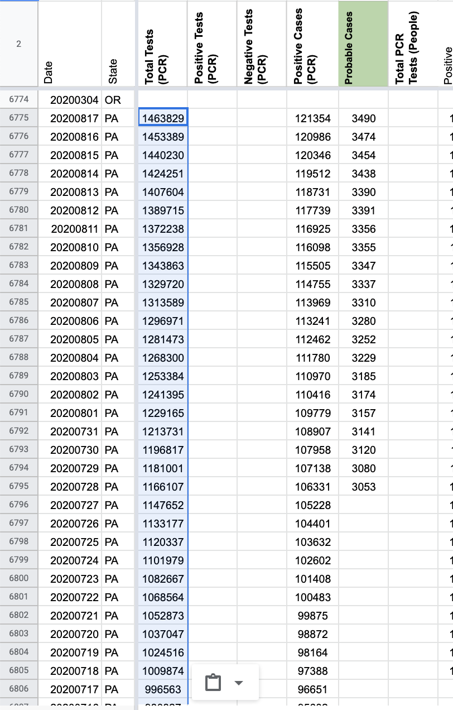

[PA] SVP Fixes: Move total test values from "Total PCR Tests (People)" to "Total Tests (PCR)" and backfill Totals to 3/11
Issue number 773
jaclyde opened this issue on August 17, 2020 at 11:03 pm
Labels Data quality Historical Data stale
State: PA
Dates impacted: 8/17 - 3/11
Issues: PA report positive cases and negatives. We add these values to get Total Tests, however the units of the negative tests is unclear. We are moving the Total Test values from “Total PCR Tests (People)” to “Total Tests (PCR).”
Additionally, we are backfilling the Total Tests (PCR) metric from 3/11-5/17 using the positive case values plus the negative case values we had already recorded. In doing the backfill we noticed that the total had been carried over from 5/12-5/17. During this period we were unsure what was included in PA’s case number, the backfill includes replacing that carried over value with the value that matches positive+negative.
Comments
BEFORE BACKFILL  AFTER 
Backfill Values: 332904 327836 319832 311195 302869 295980 288858 284383 277107 270559 262788 256340 250882 245590 240641 235376 227448 221365 214883 209088 203422 198593 192935 186143 179114 171956 166851 162952 158854 153965 147373 141470 137584 133631 129792 124890 120153 113019 105602 98538 91278 83854 77771 70030 62115 54714 48232 42488 37864 33455 28005 23234 18128 12320 9494 7239 5443 4137 2842 1793 1320 975 746 268 252 181 138 104
This issue has been automatically marked as stale because it has not had recent activity. It will be closed if no further activity occurs. Thank you for your contributions!
BEFORE MOVE  AFTER MOVE 